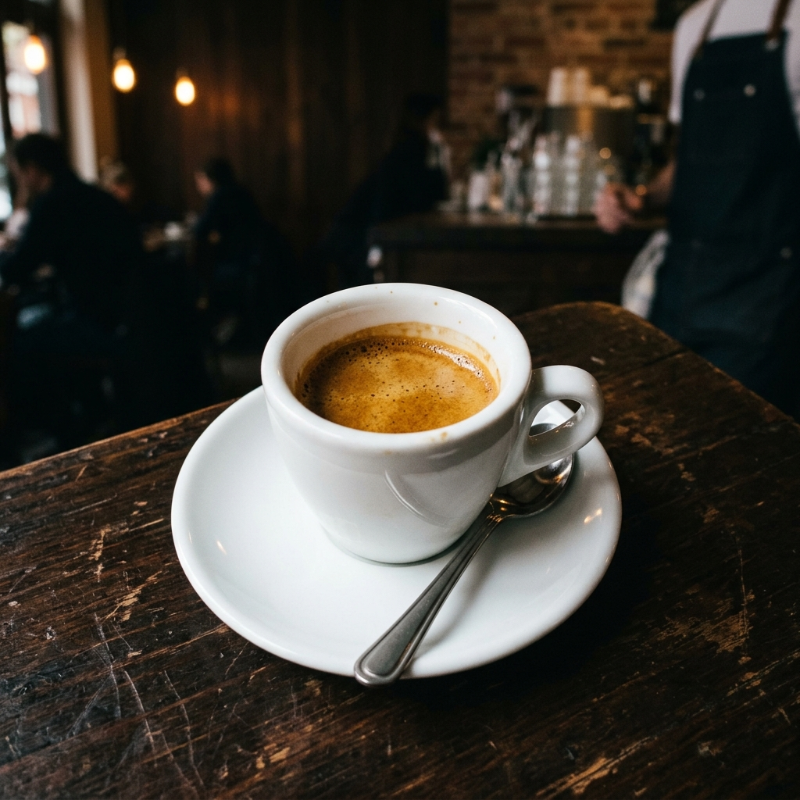

Espresso
Extraction courte, grain local torréfié avec soin. Notes de caramel et de noisette.
2,50 €
Single origin
Chaussée de Waterloo 586, 1050 Ixelles
Mar–Ven 8h–17h · Sam–Dim 9h–17h
Notre histoire
Malō est né d'une envie simple : créer un lieu à Ixelles où la qualité du café rencontre la générosité des bagels maison. Ouvert fin 2025 sur la Chaussée de Waterloo, entre Châtelain et la Bascule, nous avons pensé chaque détail de l'espace pour que vous puissiez souffler.
Nos grains sont torréfiés par un artisan local de renom. Nos baristas vous guident vers l'extraction qui vous correspond — espresso corsé, cappuccino velouté, ou filter délicat. Nos bagels, eux, sont préparés sur place, genereux et bien garnis.
Découvrir le menuAmbiance
Bleus et verts apaisants, bois clair, lumière naturelle. Un espace conçu pour souffler.
Nous trouver
Chaussée de Waterloo 586
1050 Ixelles, Bruxelles
Voir sur Google Maps →